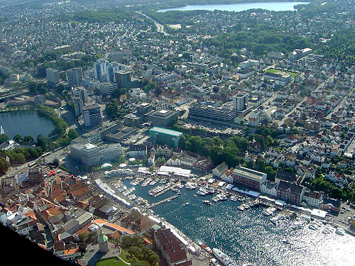
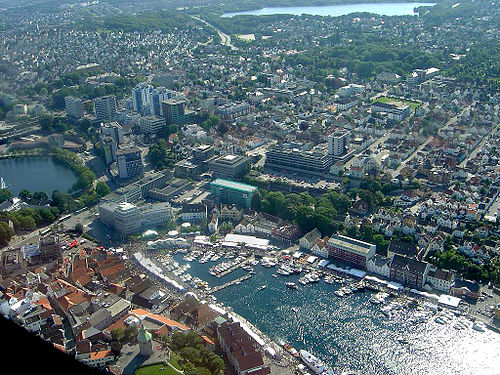
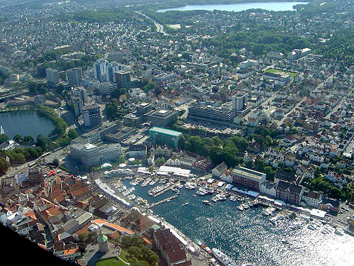

Un village dans les îles Lofoten. -Wikipédia  L'aire urbaine de Stavanger-Sandnes. -Wikipédia fjord de Norvège-Chuck Eugene (Unsplash) Rivage en Norvège -Jakub Nawrot (Unsplash)

 Un village dans les îles Lofoten. -Wikipédia

L'aire urbaine de Stavanger-Sandnes. -Wikipédia
Un village dans les îles Lofoten. -Wikipédia

L'aire urbaine de Stavanger-Sandnes. -Wikipédia
 fjord de Norvège-Chuck Eugene (Unsplash)
fjord de Norvège-Chuck Eugene (Unsplash)
 Rivage en Norvège -Jakub Nawrot (Unsplash)
Rivage en Norvège -Jakub Nawrot (Unsplash)